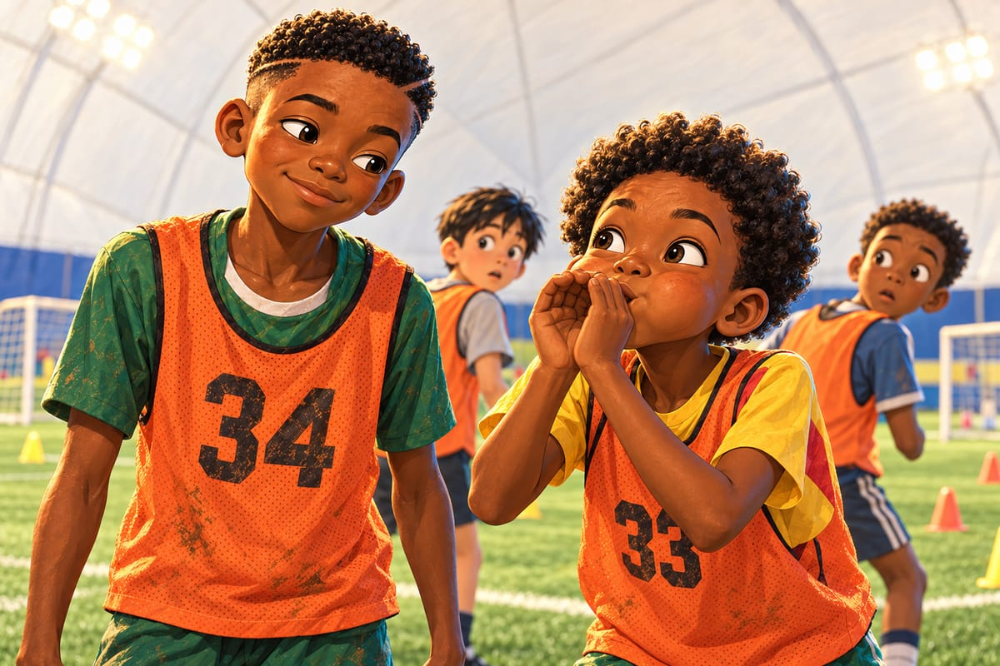

Les tryouts
« Une guimauve ! »
Kaydoudou le crie en descendant de la voiture. Et après ça, plus personne dans la famille n'appelle le dôme autrement.
« Regarde, BriBri ! Une guimauve géante ! Plus haute que l'église de Bonamoussadi ! »
« On ne mange pas le dôme, Kaydoudou », dit Maman.
« Je n'ai rien dit ! »
« Tu l'as pensé très fort. »
Papa pose une main sur chaque épaule.
« Respirez, les garçons. Jouez comme à la maison. »
Pour entrer, il faut passer une porte tournante qui vous souffle un vent chaud au visage. Fffff ! Kaydoudou fait trois tours dedans. BriBri le tire dehors par la capuche.
« C'est pour garder l'air dedans, explique Papa. Avec une porte normale, le dôme se dégonflerait. »
« Comme un ballon crevé ? »
« Comme un ballon crevé. »
Kaydoudou décide de ne pas éternuer de la journée.
Dedans, des projecteurs. Une pelouse trop verte. Et une chaleur d'été.
« BriBri ! Ils ont mis l'été dans une bulle ! Et c'est quoi, ces petits grains noirs ? Ça saute ! »
« Rubber, bro ! »
Diego arrive en courant, chasuble 12 sur le dos.
« Du caoutchouc. Tonight, you find them in your bed. In your ears. Everywhere ! Look : like a hundred kids. They take maybe twenty. The others go home. »
« Vingt ? Sur cent ? »
« Yep. Everybody does the tryouts, every winter. Even me. Even the coach's dog, probably ! »
Être pris, pense Kaydoudou. Avec mon frère. Ensemble. C'est tout ce que je veux.
Il enfile la chasuble orange numéro 33 par-dessus son tee-shirt jaune à bande rouge. BriBri reçoit le 34.
« Trente-trois, calcule Kaydoudou. Trois plus trois, six. Plus un, sept. C'est un sept caché ! »
« Tu viens d'inventer les maths », dit BriBri.
« Les maths inventées, ça porte bonheur. »
BriBri ne sourit pas.
« Tu as mangé, ce matin ? »
« La moitié d'un toast. »
« Tu as refait ton sac combien de fois ? »
« Trois. »
« Et tes lacets ? »
« Deux fois. »
Kaydoudou connaît cette tête-là. C'est la tête de l'avion.
Prrrrt ! Un coup de sifflet fait trembler la guimauve.
Au centre se tient une grande femme. Queue de cheval brune, survêtement bleu marine, une tablette serrée contre la poitrine. Pas de micro. Elle n'en a pas besoin.
« Good morning, everybody ! I'm Coach Dana Whitfield. One against one, small games, and a real match. And I want three things from you. Work hard. Be brave. Have fun ! »
« Un contre un, petits matchs, et un vrai match, traduit Diego. Et travaillez dur, soyez courageux, amusez-vous ! She writes everything. Every touch. Every pass. »
« Elle est gentille ? » chuchote Kaydoudou.
« Nice. And tough. Both. »
Elle a un sourire immense. Mais à chaque phrase, son doigt touche l'écran.
Elle sourit, pense Kaydoudou. Et elle note.
Premier exercice : un contre un, dans un petit carré de cônes.
« One against one ! Let's go ! »
Dans la file, devant Kaydoudou, il y a un grand garçon blond. Cheveux presque blancs. Épaules de déménageur. Chaussettes noires parfaitement tirées jusqu'aux genoux.
Le garçon se retourne. Il regarde les pieds de Kaydoudou. Son sourire s'élargit, lentement.
« Yo, nice socks. Did your laundry lose a fight ? »
« Ha ! Good one, Tyler ! » rient ses copains.
« Il a dit quoi ? » demande Kaydoudou.
« Il demande si ta machine à laver a perdu une bagarre. »
Kaydoudou baisse les yeux. Chaussette rouge à droite, jaune à gauche. Comme toujours.
« C'est qui, lui ? »
« Tyler Brooks, soupire Diego. Twelve years old. Best striker. Biggest mouth. Careful, bro. He's strong. »
« Les camions, ça ne tourne pas vite. Moi, je l'appelle Monsieur Lessive. »
« Mister Laundry ! I love it ! »
Et quand son tour arrive, Monsieur Lessive est en face de lui.
« Ready, socks ? »
« Ready, Lessive. »
Prrrt !
Tyler part fort. Comme un camion.
Kaydoudou ne bouge pas. Il attend, sur la pointe des pieds, le ballon sous la semelle. La semelle caramel.
Tout ralentit.
Le camion arrive. Les grains noirs sautent sous ses crampons. Ses deux grandes jambes s'ouvrent.
Kaydoudou fait rouler le ballon vers la gauche. Tyler se jette vers la gauche.
Alors Kaydoudou pousse le ballon. Doucement. Du bout du pied. Entre les deux grandes jambes écartées.
Tyler baisse les yeux, bouche bée, les genoux encore écartés. Il regarde le ballon passer sous lui.
Kaydoudou fait le tour du garçon blond et récupère le ballon de l'autre côté. Un petit pont. Rond comme une lune.
« NUTMEG ! » hurle Diego.
Kaydoudou marque dans le petit but. Puis il se retourne vers Tyler, encore à moitié penché.
« My socks say hello. »
« Ooooooh ! » fait toute la file.
« Lucky ! » grogne Tyler.
« No. Caramel. »
Tyler devient rouge jusqu'aux oreilles. Sur le côté, Coach Whitfield lève un sourcil. Elle touche sa tablette.
« Nutmeg ? C'est quoi ? » demande Kaydoudou en revenant.
« Le petit pont, en anglais. Ça veut dire noix de muscade. »
« Une noix ? Pourquoi une noix ? »
« Nobody knows, bro. »
Le reste de la matinée, Tyler ne lui parle plus. Mais il passe toujours un peu trop près, l'épaule en avant.
Ensuite viennent les petits matchs, à quatre contre quatre. Et là, Kaydoudou est heureux. C'est presque Bonamoussadi : peu d'espace, beaucoup de jambes, des buts tout près.
Il fait même la voix de Radio, la main devant la bouche.
« Mesdames et messieurs, Kaydoudou ! Semelle caramel ! Crochet du margouillat ! Il passe à Diego ! Diego lui rend ! Et… BUT ! »
« You're crazy, bro ! » rit Diego.
« Thirty-three ! Yes ! » crie Coach Whitfield.
« Who's that kid with the socks ? » demande un garçon de la file.
Kaydoudou sourit jusqu'aux oreilles. On le remarque !
Mais entre deux matchs, Kaydoudou regarde le terrain d'à côté. Et son cœur se serre.
BriBri joue comme un garçon qui marche sur des œufs. Il reçoit le ballon et l'arrête net sous son pied. Il lève la tête… et un défenseur est déjà sur lui.
« Too easy ! »
Alors il fait la passe à côté. Ou en arrière. Toujours la plus sûre.
C'est le BriBri d'avant les Requins. Celui de la passe polie.
« Your first touch has to go somewhere ! » crie Coach Whitfield.
« Ton premier contrôle doit aller quelque part », traduit Diego.
BriBri hoche la tête, mais il n'a pas l'air de comprendre. À côté du numéro 34, sur la tablette, il ne doit pas y avoir grand-chose d'écrit.
« Il est en train de rater, murmure Kaydoudou. Mon frère est en train de rater. »
« He's just nervous. Wait. »
« Je ne peux pas attendre ! S'il n'est pas pris, on ne joue pas ensemble. Et sans lui, l'Amérique, c'est juste du froid ! »
Coach Whitfield appelle les équipes pour le dernier match. Kaydoudou trotte jusqu'à son frère.
« Je n'y arrive pas, Kaydoudou, souffle BriBri. Ici, tout va trop vite. »
Alors Kaydoudou met ses mains en cornet devant sa bouche. Et il souffle, exactement comme le sifflet en bois de manguier :
« Houou ! Le ballon doit voyager ! »
Deux garçons se retournent. BriBri laisse échapper un petit rire par le nez. Le premier de la journée. Ses épaules descendent d'un centimètre.

« Voilà, dit Kaydoudou. Ça, c'est mon frère. »
« Tu es bête. »
« Je suis un hibou enrhumé, corrige Kaydoudou, très digne. Et le ballon, ce n'est pas un œuf. Ne le garde pas sous ton pied. Pousse-le. »
« Pousse-le », répète BriBri, tout bas.
« Last game ! Nine against nine ! Five minutes ! »
Un vrai match, sur tout le dôme. Tyler est dans l'autre équipe, au milieu de la défense, les bras croisés.
« Hey, socks ! Not this time ! »
« Reste sur ta ligne, dit BriBri à son frère. Et regarde mes mains. »
« Thirty-four ! crie Coach Whitfield. Show me something ! »
Kaydoudou reste collé à la ligne, sur l'aile droite.
Allez, BriBri. Comme contre les Requins.
Le ballon arrive vers BriBri, au milieu, un adversaire dans son dos.
Et cette fois, il ne l'arrête pas sous son pied.
Du plat du pied gauche, il le pousse d'un mètre sur le côté. Loin du défenseur. Vers l'herbe libre. Le défenseur passe dans le vide.
La tête de BriBri est déjà levée. Sa main droite aussi.
Deux doigts.
Les frères se regardent. Une demi-seconde. Les deux doigts, c'est la langue secrète de la terre rouge.
Kaydoudou part.
« GO, KAYDOUDOU ! » hurle Diego.
Il court dans le dos de Tyler, le long de la ligne, de toutes ses forces. Il entend le bruit sec du ballon frappé. Pof. Puis un silence.
« Whoa… »
Le ballon passe au-dessus des milieux. Au-dessus de Tyler, qui pivote trop tard. Et il retombe juste devant Kaydoudou, quarante mètres plus loin. Une passe qui traverse tout le dôme.
« No way… » souffle Tyler.
Kaydoudou n'a qu'à pousser le ballon au fond.
Il fait trois pas de la danse de Roger Milla. Puis il se rappelle qu'il n'y a pas de poteau de corner dans une guimauve. Alors il court sauter sur le dos de son frère.
« Les deux doigts ! Les deux doigts sont arrivés en Amérique ! »
« Tu m'étrangles, Kaydoudou. »
« Je sais ! »
« BRO ! hurle Diego. Forty meters ! FORTY ! »
« Who's number thirty-four ? » demande un garçon.
Coach Whitfield ne sourit plus. Elle regarde BriBri. Et elle écrit sur sa tablette. Longtemps. Très longtemps.
« Thank you, everybody ! You'll get an email on Tuesday ! »
Dans la voiture, Papa sourit.
« Alors ? »
« Alors, la guimauve est à nous ! »
Le soir, dans son bain, Kaydoudou trouve des grains noirs partout.
« Maman ! J'en ai dans les oreilles ! Diego avait raison ! »
« Et dans le nez aussi, mon chéri. »
L'e-mail arrive le mardi soir, au milieu du dîner. Papa le lit à voix haute.
« Dear parents… BriBri : U12. »
« Mon grand ! » crie Maman.
« Moi ? Pris ? »
BriBri ferme les yeux une seconde, comme quelqu'un qui pose enfin un sac très lourd.
« Et moi ? Et moi ? »
« Kaydoudou : U11. »
Kaydoudou pose sa fourchette.
« Avec les petits ? Pas avec mon frère ? »
Ça y est, pense-t-il. On me laisse de côté.
« Attends, dit Papa en levant un doigt. Il y a une suite. Coach Whitfield would like Kaydoudou to play up with the U12 team. »
« Play up ? C'est quoi, play up ? »
« Surclassé. Par l'âge, tu es un U11. Mais elle te fait monter d'une catégorie, chez les U12. Avec des plus grands que toi. Avec ton frère. »
« AVEC MON FRÈRE ? »
Kaydoudou bondit. Splash ! La carafe d'eau se renverse.
« Kaydoudou ! La carafe ! »
« Pardon, carafe ! »
Il fait le tour de la table en dansant et tend le poing à BriBri.
Poing contre poing. Main sur le cœur.
« Tu as vu ? chuchote Kaydoudou. Elle ne m'a pas oublié. »
« Personne n'oublie un garçon avec ces chaussettes. Je te l'ai dit : c'est scientifique. Mais là-bas, tu seras le plus petit. »
« Alors je serai le plus rapide. »
Le téléphone de Papa vibre. Un message de Diego.
« Congrats bros ! Bad news : Tyler made it too. »
« Monsieur Lessive ! Encore lui ! »
« Il faudra jouer avec lui, maintenant », dit BriBri.
« Ou lui faire un deuxième petit pont. »
« Kaydoudou. »
« Quoi ? Un tout petit ! »
Premier entraînement des U12, le jeudi suivant, sous la guimauve.
À côté de Coach Whitfield, il y a un jeune homme maigre, lunettes rondes, sweat à capuche gris. Il serre sa tablette comme un trésor. Derrière lui, une caméra perchée sur un grand pied regarde tout le terrain.
« Guys, this is Marcus Bell, our video analyst. Marcus is shy. But Marcus films everything. Marcus counts everything. And never, ever lie to Marcus. »
« Marcus filme tout, chuchote Diego. Marcus compte tout. Et ne mentez jamais à Marcus. »
« Monsieur Tablette », souffle Kaydoudou, ravi.
À la fin de la séance, Marcus vient vers lui en remontant ses lunettes.
« Bonjour. Je parle… un petit peu français. »
« Moi aussi ! Beaucoup, même ! »
« Number thirty-three, right ? Great nutmeg on Tyler at the tryouts. »
Kaydoudou gonfle la poitrine. Il a compris « great » et « Tyler ». Ça lui suffit.
« Thank you ! BriBri, tu as entendu ? Great ! »
« After that… » Marcus tapote son écran. « … you lost the ball nine times in a row. »
La poitrine de Kaydoudou se dégonfle comme un dôme dont on aurait ouvert la porte.
« Nine ? How you know ? »
Marcus sourit. Le sourire doux des gens qui disent des choses terribles très gentiment.
« I count. »